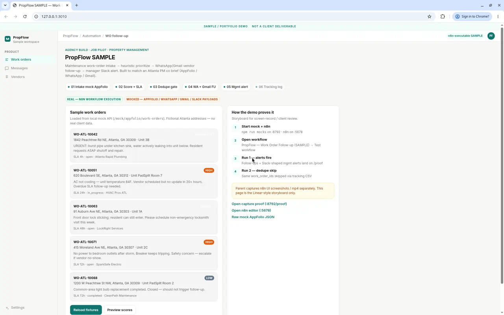
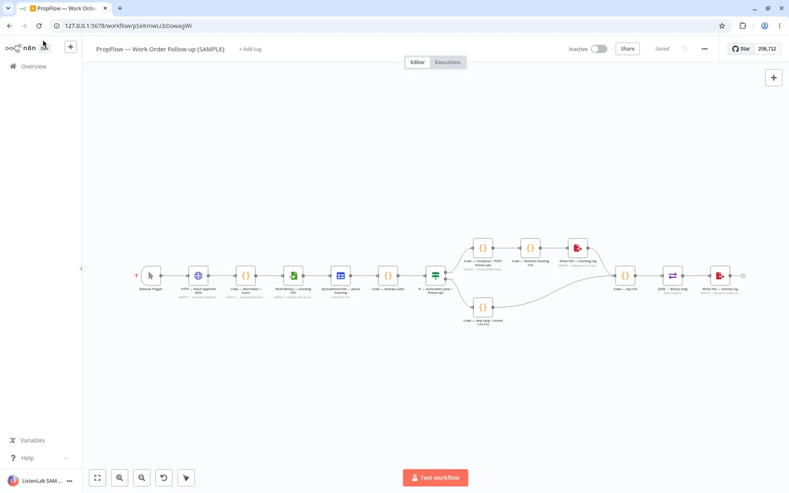
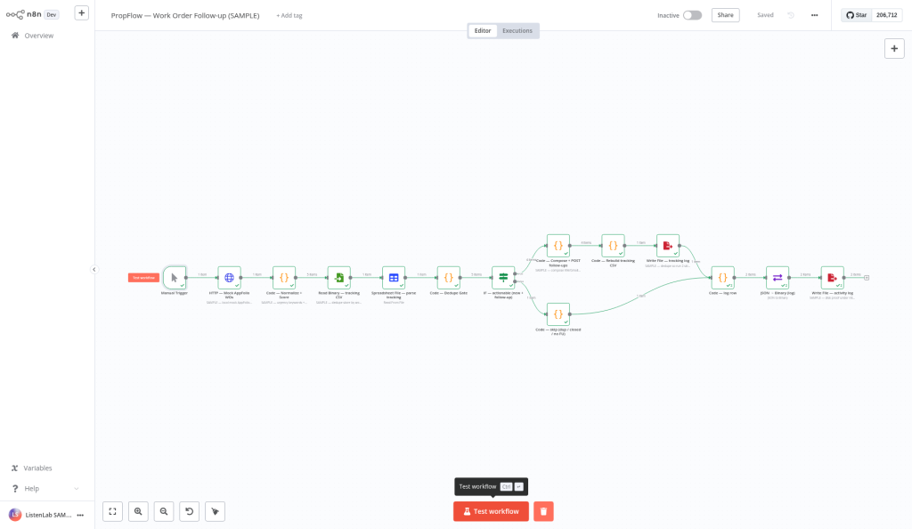
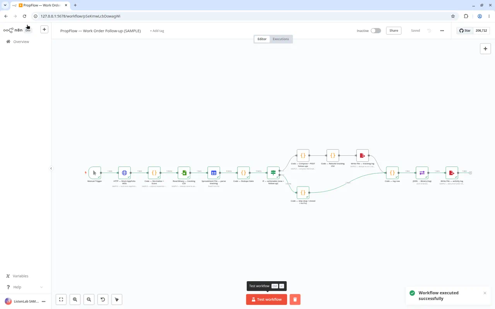
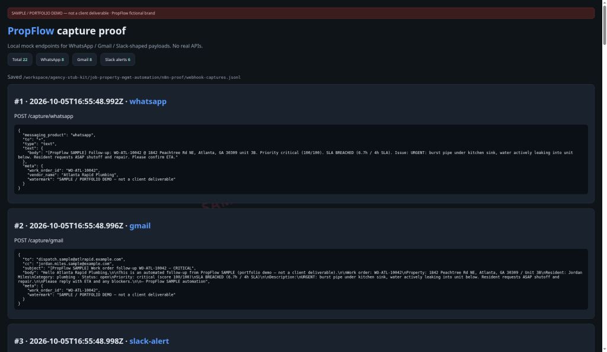

SAMPLE · PORTFOLIO DEMO · NOT A CLIENT DELIVERABLE
PropFlow · n8n Work-Order Follow-up
Private SAMPLE demo — real n8n UI (mock AppFolio intake → follow-ups → Slack alert → dual-run dedupe). Obscure link; watermarked portfolio only.
- REAL: n8n 1.82 workflow execution, local mock/capture server, CSV dedupe dual-run.
- MOCKED: AppFolio / WhatsApp / Gmail / Slack external APIs (shaped local payloads only).
- Run 1: actionable WOs fire WhatsApp + Gmail follow-ups; critical/SLA → Slack-shaped alert.
- Run 2: same work_order_ids skipped — no duplicate spam.
Screen record (~76s)
Demo → n8n canvas → Test (follow-up green) → proof captures → dedupe skip. SAMPLE watermark throughout.
Still frames

Demo storyboard home

n8n canvas — PropFlow workflow

Run 1 — follow-up branch green

Run 2 — dedupe skip path

Local proof — WA / Gmail / Slack captures
Biz cite: “PropFlow SAMPLE — private demo page (n8n work-order follow-up dual-run). Watermarked portfolio only; no client contact / no Submit.”